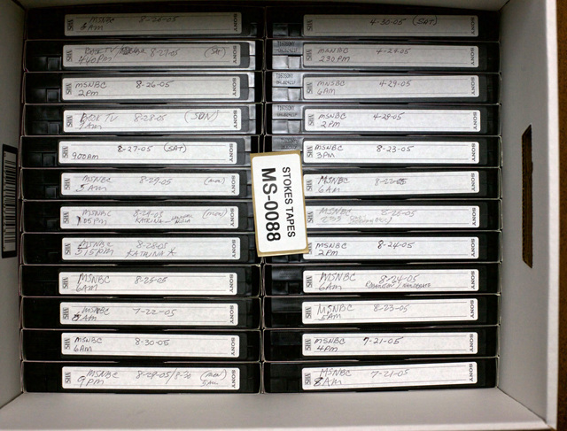

Upon learning about the Collection assignment, I was reminded of the work I did on a documentary with a director last semester. Specifically, the documentary focused on the life and massive video cassette archive of Marion Stokes, a Philadelphia woman who had amassed a collection of over 35 years’ worth of new footage. The description and prompt of the assignment immediately reminded me of the vastness and variety of Stokes’ collection. Moreover, her collection had never been logged online before the director of the documentary decided to set up a google, so I thought it would be the perfect information to work with.
Marion Stokes was a Philadelphia native who was obsessed with archiving and collecting new footage that she found to be critical in the development of the world. As a former librarian, archiving and collecting came very naturally to her. Stokes’ collection begins in 1988 and runs all the way up until 2008/2009. Her process was simple yet tedious; record news television programs throughout the duration of the day, without any hiccups. For the majority of her tapes, she would write the date, time, channel, program, and sometimes a brief description on the labels. Her obsession with archiving more often than not interrupted her personal life, as she was known to leave restaurants early just to go home and set up recording tapes. Before 2016, her archive had never before been sorted or logged.

When I first approached the project, I was immediately intimidated by the amount of information I had to work with. With 35 years of cassette tape information, there were hundreds of ways I could have organized the information. I initially wanted to work with a couple days of cassette tapes and organized them based on the information written on the tapes, but upon collecting the information I thought it was too impersonal and boring. I began thinking about what Marion was truly passionate about; news. This compelled me to work with a series of important events throughout the past 30 years, such as presidential elections, trials, and terrorist attacks. Specifically, I decided to work with both President Bush elections, Bill Clinton’s election, the OJ Simpson trial, 9/11, and Obama’s election. These occurrences are at the core of Stokes’ reasoning behind amassing such a collection, as she was concerned that news and history was going to become lost over time.
The layout of my website derives from the images of the boxes of cassette tapes in Stokes’ archive. The tapes are stacked in a grid at random order. Listed along the top of the page are the various categories of information users can press to filter the page. They are listed in chronological order, starting with President Bush sr.’s election in 1988. When users click on a category the text is filled in on the grid, matching the color associated with the hover of the category. If users click the category a second time, the category disappears. This increase the possible interactions users could have with the website, as creating compositions with the categories proves entertaining in itself. When users hover over each portion of the grid, the information size is increased to make it more legible. In addition, the background of the box matches the hue of the buttons, thus increasing the possibilities when using. Listed at the end of the categories is an “All” button, which allows users to view all the information at one time. Like all the other buttons, if the click it again, all the information disappears.
Overall, I found this project to be very informative and interesting. It helped me learn how to organize large amounts of information on the web in a compelling way, while also using the information and composition to create a heighted user experience.